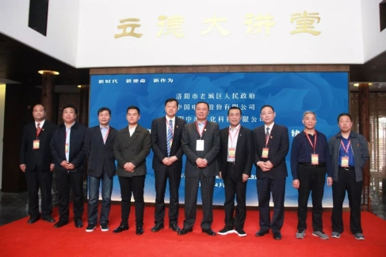
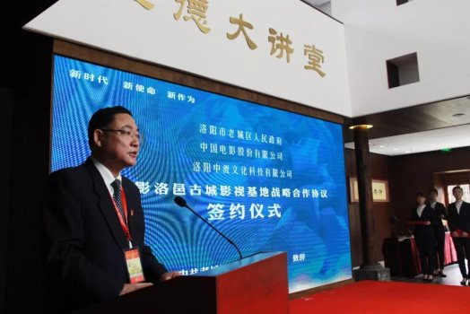
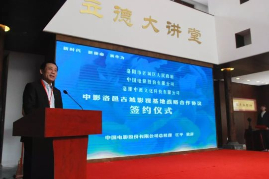
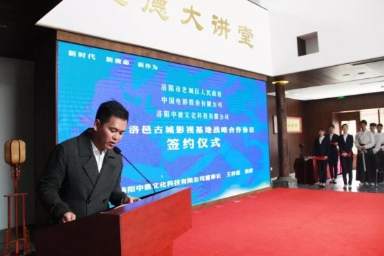
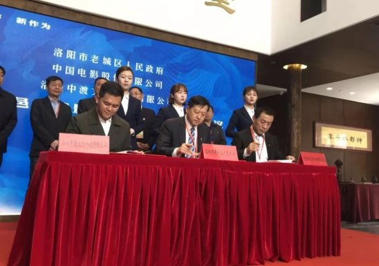
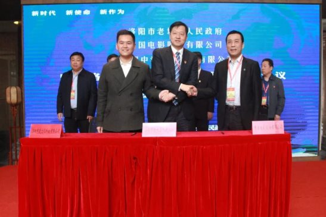

中影洛邑古城影视基地建设战略合作签约仪式
洛邑古城 2018年4月10日

为进一步挖掘老城区厚重历史文化资源，以影视剧为强势推动，实现影视与旅游的融合发展，4月10日上午，洛阳市老城区人民政府、中国电影股份有限公司、洛阳中渡文化科技有限公司《中影洛邑古城影视基地建设战略合作协议》签约仪式在洛邑古城立德苑举行。

洛阳市副市长贺敏，中共老城区委书记杨劭春，中共老城区委副书记、区长牛刚，老城区人大主任赵平安，老城区政协主席卢中亮，中共洛阳市古城党工委书记陈巍，中国电影股份有限公司总经理江平，中国电影股份有限公司制片分公司总经理许建海，洛阳中渡文化科技有限公司董事长王梓霖等领导莅临古城、出席签约仪式，共同见证这一重要时刻。

中国电影股份有限公司，是由中国电影集团公司作为主发起人联合中国国际电视总公司、央广传媒发展总公司、长影集团有限责任公司、江苏省广播电视集团有限公司、中国联合网络通信集团有限公司、北京歌华有线电视网络股份有限公司、湖南电广传媒股份有限公司共同发起设立的集影视制片制作、电影发行、电影放映及影视服务于一体的著名影视企业，2017年入选第九届全国“文化企业30强”，创作影片《狼图腾》、《百团大战》、《中国合伙人》、《建国大业》、《建党伟业》、《厉害了，我的国》等，为千余部影视剧提供了制作服务，培养和造就了一大批活跃在当今中国影坛的编剧、导演、演员及各类电影专业技术人才。

洛邑古城，是洛阳中渡文化科技运营管理的核心项目之一。项目共分四期，一期项目“文峰塔非遗产业园”以非物质文化遗产为主要业态内容，利用资源与优势，发挥洛阳在国家“一带一路”战略构想中联通东西、承接南北的中原地域优势，以“留住老洛阳底片，建好新洛阳客厅” 的理念为指导，成功打造洛阳老城与现代都市交相辉映的历史文化传承创新示范区和集游、玩、吃、住、购于一体的区域性文化旅游观光区。

洛邑，是一座历史蕴盖千年的古城。这片古老的土地见证了周公营造洛邑、隋炀帝开凿运河、武则天神都称帝等诸多影响中华民族发展的辉煌历史，更流传着新潭烟雨、文峰峻举、勒马听风等传奇故事，可以说是洛阳最具文化魅力的地方，更是影视创作的灵感源地。

洛阳市老城区人民政府、中国电影股份有限公司、洛阳中渡文化科技有限公司三方将以“文化旅游发展、影视开发、弘扬历史文化”为合作方向，依托洛阳老城区文化老城发展规划，联合具有深厚影视实力的中影公司与拥有中国风古建筑群的洛邑古城，大力建设中影洛邑古城影视基地。深挖洛阳悠久历史文化，将文化资源开发与影视文化产业、文化产业项目有机结合，创作出最具中国特色的影视文化产品，为中国旅游影视基地的建设，更添浓墨重彩的一笔。